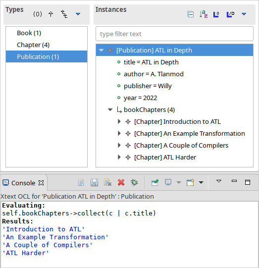
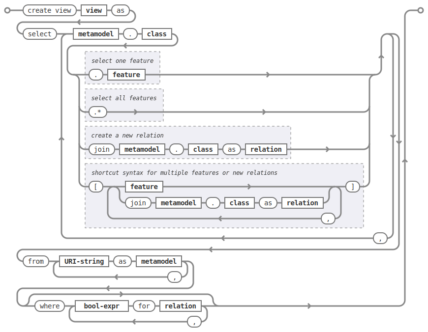

EMF Views User Guide
Overview
EMF Views is a tool that enables to combine and refine/augment several EMF-based models into views. These views behave as regular models: you can navigate, query and transform them as you would do with any regular model. This comes in handy when you want to deal with several related models, for instance.
Views can filter any element from its contributing models. This can be used to create views focused on particular aspects of related models. Filters also enable a form of access control: one can create views that hide sensitive information coming from one or more models.
Views can also augment the contributing models with new elements, attributes or associations. This is useful for instance when combining related models: you can add new associations that link related classes together, allowing you to navigate or query the view more naturally.
Views can be created interactively via eview and eviewpoint definition
files, or can be created programmatically. Moreover, EMF Views currently comes
with two DSLs that ease the definition of views: VPDL and MEL.
Tutorials
These tutorials will take you through the main features of EMF Views.
Creating a view manually
We will create a view linking two related models representing books.
In order to create a view, you need the following:
- Metamodels. These can be given as Ecore files, or through the namespace URI if the packages are loaded as plugins.
- Models. These can be given in any serialization format supported by EMF (usually XMI).
- A viewpoint. This defines the metamodel of the view. It is specified
through an
eviewpointfile. - An
eviewfile which describes the view.
First, unpack the emfviews-tutorial example. Here is what the file hierarchy
should look like:
.
├── metamodels
│ ├── Book.ecore
│ └── Publication.ecore
├── models
│ ├── book.xmi
│ └── publication.xmi
├── viewpoints
│ ├── publicationsAndBooks.eviewpoint
│ └── publicationsAndBooks.xmi
└── views
├── allChapters.ecl
├── allChapters.eview
├── firstChapter.ecl
└── firstChapter.eview
This is one common way to organize views that are created using files, but it is not mandatory to follow this structure.
The metamodels folder contains the Ecore files for our two metamodels, Book
and Publication.
The Book metamodel has details about each chapter, while the Publication has more information about the publisher and publishing date. This is a simple example of two metamodels with overlapping and complementary information. The view we will create will bring all this information under a single (virtual) metamodel.
The models folder contains two serialized models in XMI format that conform to
these metamodels. Here are the contents of book.xmi (left) and
publication.xmi (right):
They both model the same book. In this example, there is only one element for simplicity. In realistic situation, each model may contain several books or publications. Our view will work the same with any number of elements.
To define the view, we must first define a viewpoint, which acts as a (virtual) metamodel for the view. Let us look at the file hierarchy again:
├── viewpoints │ ├── publicationsAndBooks.eviewpoint │ └── publicationsAndBooks.xmi
The viewpoints folder contains two files. Let us focus on the
publicationsAndBooks.eviewpoint file which defines the viewpoint, and is
defined as:
contributingMetamodels=../metamodels/Publication.ecore,\ ../metamodels/Book.ecore weavingModel=publicationsAndBooks.xmi
(See eview and eviewpoint files for the full syntax and valid configuration
keys of eviewpoint files.)
The first two lines list the contributing metamodels. These are the two
metamodels we are concerned with. In this case, we give relative URIs to the
Ecore files in the metamodels folder.
We could also have used namespace URIs in contributingModels. The upside of
pointing to the Ecore files in this case is that EMF Views will load them
without us having to register the EPackages manually.
The third line specifies the weaving model. The weaving model describes how
the viewpoint is constructed: it contains filters that select or exclude
elements from the contributing metamodels, and it describes new elements that
are to be added to the viewpoint. If you omit the weavingModel property, no
elements are filtered or added.
Let’s try it now. Remove or comment (# begins a line comment) the
weavingModel line, then save the file. You have to open the viewpoint in text
mode (Right click → Open With → Text Editor).
After you have made the change, you want to open the eviewpoint file in a
model editor. The Sample Ecore Model Editor and the MoDisco Model Browser
should both be able to do so. Right click → Open With → Other..., and
in the dialog select Sample Ecore Model Editor then click OK:
Here is what you should see:

This metamodel combines, under the same viewpoint package, our two metamodels
Publication and Book. This metamodel is purely virtual: the packages
Publication and Book, and all their elements, are proxies to the actual elements
from the contributing metamodels.
Note that the Publication package comes before Book because that is the
order we specified in the contributingMetamodels line in the eviewpoint file.
Let us restore the weavingModel line. First, close the Sample Ecore Model
Editor view of the eviewpoint. Then, restore or uncomment the weavingModel
line in the eviewpoint by opening it with the Text Editor (or reuse the Text
Editor tab if you had not closed it). Save the eviewpoint file, and open it
up with the Sample Ecore Model Editor once more.
Here is what you should get now:
There are two differences with the previous viewpoint: there is a new
bookChapters association in the Publication class, and the Chapter.nbPages
attribute has been filtered out. The bookChapters association enhances the
Publication metamodel by allowing us to navigate the chapters from a
Publication instance. A Publication in this viewpoint would have all the
information of the Book instance, and more.
Note that the Chapter class is part of the Book package (it comes from the
Book metamodel), but it is the target class of an association of the
Publication package. Combining both metamodels in the viewpoint allows us to
create inter-metamodel associations, since they are now part of the same virtual
metamodel.
If we open the weaving model publicationsAndBooks.xmi with the Sample Ecore
Model Editor, we can see that it contains exactly these two changes. Here is
the viewpoint on the left with the weaving model on the right. The changes made
by the weaving model to the viewpoint are highlighted:
Now that we have a viewpoint, all that is left is the view itself. Let us take another look at the file hierarchy:
└── views
├── allChapters.ecl
├── allChapters.eview
├── firstChapter.ecl
└── firstChapter.eview
In the views folder, two views are defined: allChapters and firstChapter.
Let us focus on allChapters for now. If we look inside allChapters.eview:
contributingModels=../models/publication.xmi,../models/book.xmi viewpoint=../viewpoints/publicationsAndBooks.eviewpoint matchingModel=allChapters.ecl
(Again, see eview and eviewpoint files for a complete description of eview
files.)
The contributingModels line point to the model resources which contribute to
the view. Note that the order of the contributing models does not have to match
the order of the contributingMetamodels line in the eviewpoint file.
The viewpoint line is a relative path to the eviewpoint file. In order to
define a view, we need to give it a metamodel, which is a viewpoint.
Finally, the matchingModel line is a path to an Epsilon Comparison file. The
matching model contains rules that are used by EMF Views to construct a weaving
model for the view.
EMF Views can be extended to use other matching models beyond ECL. See Adding new matching models.
Instead of a matching model, you can specify a weaving model directly in the
eview file. Although the weaving model is usually too tedious to create
manually, it may be a better option when creating views programmatically.
Let us look at this ECL file now:
//alias_publication=http://publication //alias_book=http://book rule bookChapters match p : publication!Publication with c : book!Chapter { compare { return p.title = c.eContainer().title and p.author = c.eContainer().authorName; } }
It describes a rule to populate the virtual association bookChapters. It
considers each publication p from the (concrete) Publication metamodel against
each chapter of the (concrete) Book metamodel; in other words, a Cartesian
product Publication × Book. For each pair (p,c), if the predicate in
compare is true, then the matching elements are part of the association
bookChapters.
Here, if we have a book and a publication that refer to the same ouvrage, then we want to add all chapters of the book to the association. Thus, the predicate checks that the title of the publication is the same as the book’s title, and that they both have the same author, since that is all the common information between the two metamodels.
Note that for our two particular models which describe the same book, the predicate will always return true. Hence, we could have written the rule trivially:
... compare { return true; } }
But the former version will work with models containing more books and publications.
When we open the allChapters.eview file with the MoDisco Model Browser (Right
click → Open With → Other..., and select MoDisco Model Browser then
click OK), we can see that the bookChapters associations allows us to navigate
the chapters from the Book model:
We also can see that the nbPages attribute is absent from the chapters,
because it has been filtered out from the metamodel.
Now, we have defined a view that combines the Book and Publication models. But
we can define multiple views for the same viewpoint. Take a look at
firstChapter.eview:
contributingModels=../models/publication.xmi,../models/book.xmi viewpoint=../viewpoints/publicationsAndBooks.eviewpoint matchingModel=firstChapter.ecl
The only difference with allChapters.eview is the matching model. For this
view, we want only the first chapter of a matching book to be added to the new
bookChapters association. Consequently, in firstChapter.ecl, the predicate
is:
return p.title = c.eContainer().title and c = c.eContainer().eContents().first();
The right-hand part of the condition only matches if the chapter c is the
first one of the book it is part of.
As a result, when we open firstChapter.eview with the MoDisco Model Browser,
only one chapter is part of the bookChapters association:
And that’s it! We have created one viewpoint combining two metamodels, then we
created two views combining two models using this viewpoint. Note that while
this method of creating views with eviewpoint and eview files is suitable
for creating small-scale views interactively, EMF Views offers two other methods
to create views: programmatically and using VPDL.
In the next two sections, we will show how we can filter other elements in the viewpoint, and how we can add new virtual elements.
Creating a view with VPDL
Writing a VPDL file
VPDL, standing for ViewPoint Description Language, is a domain-specific
language for easing the specification of viewpoints and the creation of
corresponding views using EMF Views. The syntax of VPDL is inspired by SQL’s
SELECT statement.
The VPDL syntax is still experimental and likely to change in the near future.
Instead of manually creating eviewpoint and eview files, you write a single
vpdl file which describes the viewpoint and the view at the same time. Here
is a VPDL file recreating the firstChapter view of the previous section:
create view publicationsAndBooks as select pub.Publication.*, pub.Publication join book.Chapter as firstChapter, book.Book.*, book.Chapter.title, from 'http://publication' as pub, 'http://book' as book, where 's.title = t.eContainer().title and t = t.eContainer().eContents().first()' for firstChapter
(See VPDL for a description of the full syntax.)
The first line create view specifies the name of the viewpoint. This name is
used for generating the eviewpoint, eview and xmi weaving model file.
With the select clause, you explicitly select the classes and features from
the contributing metamodels that will appear in the viewpoint. The select
clause essentially specifies the viewpoint’s weaving model, albeit in plain
text. Here with pub.Publication.* we say that we want all features of the
pub.Publication class in the viewpoint, and by selecting only
book.Chapter.title from book.Chapter, we exclude the nbPages attribute.
The select clause is a whitelist, so if we don’t include the book.Book.*
line for instance, the resulting viewpoint would not let us navigate Book
instances, since there would be no visible features.
The line:
pub.Publication join book.Chapter as firstChapter,
tells EMF Views to create a virtual association from Publication to Chapter
called firstChapter. This is the same as the bookChapter association of the
previous section.
The from clause simply maps the namespace URIs of the contributing metamodels
to aliases used in the select clause.
Lastly, the where clause specifies, for each new association, how to match
elements from contributing models in the view. This is used to generate the matching model
as an ECL file. Here, we use the same predicate as before, but this time s
and t refer respectively to the source (Publication) and target (Chapter)
of the association.
Using a VPDL file in Eclipse
To use a VPDL file, your project need to be configured as an Xtext project in
Eclipse. If you create a new project and add a vpdl file in it, Eclipse
should prompt you to configure it as an Xtext project. Otherwise in the
outline, Right click on the project → Configure → Convert to Xtext
project.
Once the project is configured, whenever you save the vpdl file Xtext should
generate three files: the eviewpoint, the xmi weaving model, and the ecl
matching model.
If you unpack the vpdl-tutorial example, here is how the file hierarchy looks
like after we save the publicationAndBooks.vpdl file:
.
├── src
│ └── publicationsAndBooks.vpdl
├── src-gen
│ ├── publicationsAndBooks.ecl
│ ├── publicationsAndBooks.eviewpoint
│ └── publicationsAndBooks.xmi
└── views
└── firstChapter.eview
All the generated files are in the src-gen directory.
To create the view however, we still need an eview file. VPDL does not create
one for a view (yet). You just have to point to the generated files, and
specify the contributing models you want to use. Here is the definition of
firstChapter.eview:
viewpoint=../src-gen/publicationsAndBooks.eviewpoint contributingModels=../../emfviews-tutorial/models/publication.xmi,\ ../../emfviews-tutorial/models/book.xmi matchingModel=../src-gen/publicationsAndBooks.ecl weavingModel=publicationAndBooks.xmi
Opening firstChapter.eview using the MoDisco Model Browser, we get the same
result as before, the difference being that this time the new association is
more accurately called firstChapter:

Creating a view programmatically
In some situations, you may want to create views without touching the
filesystem. The EMF Views API lets you create views purely in memory, without
creating eview files or vpdl files.
Here is a standalone example of creating a minimal view on the UMLPackage
using the API:
// 1. Create viewpoint Viewpoint viewpoint = new Viewpoint(Arrays.asList(UMLPackage.eINSTANCE)); // 2. Create model UMLFactory f = UMLFactory.eINSTANCE; Component C1 = f.createComponent(); C1.setName("Comp1"); Component C2 = f.createComponent(); C2.setName("Comp2"); Resource model = new ResourceImpl(); model.getContents().addAll(Arrays.asList(C1, C2)); // 3. Create view View view = new View(viewpoint, Arrays.asList(model)); // 4. Navigate the view for (EObject o : view.getVirtualContents()) { System.out.println(o.eGet(o.eClass().getEStructuralFeature("name"))); }
To create a Viewpoint, we must provide a list of contributing metamodels as
instances of EPackage; here we give the UMLPackage metamodel. We do not
provide a weaving model, so a default empty weaving model is used instead. With
an empty weaving model, no elements are filtered out from the contributing
metamodels, and no new elements are added.
Then we build the model using the UMLFactory. We keep it simple for the
purposes of example: just two Component instances. In a realistic situation,
this model could come from anywhere, as long as we have a resource to provide to
the View constructor.
The third step is to create the view by passing the viewpoint and a list of
contributing models as instances of Resource to View. Here we pass the
model resource we just constructed. The third optional argument to the View
constructor is the view weaving model. As for Viewpoint, an empty weaving
model is used if unspecified.
Finally, we navigate the view to print the name of the components inside it. Since we have used empty weaving models, the view is identical in content to the model. Running this snippet will output the names of the two components:
Comp1 Comp2
Caveats
Note that we have to use the reflective EMF API when navigating views, because there is no corresponding generated code. View elements are always dynamic objects. In other words, it would be tempting, but wrong, to navigate the view as follows:
for (EObject o : view.getVirtualContents()) { Component c = (Component) o; // this cast will fail System.out.println(c.getName()); }
This code will compile, but will raise a ClassCastException at runtime. For
the same reasons, testing for instances with instanceof will not work with the
current version of EMF Views:
for (EObject o : view.getVirtualContents()) { if (o instanceof Component) { // this can never be true ... } }
For testing instances, you have to use the reflective API. But be careful about
using the metaclasses from viewpoint and not from the original UMLPackage.
The following is wrong:
EClassifier comp = UMLPackage.eINSTANCE.getComponent(); for (EObject o : view.getVirtualContents()) { if (comp.isInstance(o)) { // this test can still never be true ... } }
The view conforms to the viewpoint, and elements of the viewpoint refer to
elements from UMLPackage, but they are not equal. The correct way of finding
Component instances is by getting the Component metaclass from the virtual
UMLPackage:
EPackage vUML = viewpoint.getRootPackage().getESubpackages().get(0); EClassifier comp = vUML.getEClassifier("Component"); for (EObject o : view.getVirtualContents()) { if (comp.isInstance(o)) { ... } }
Creating a weaving model programmatically
We have seen how to create viewpoints and views programmatically, but only with
empty weaving models. Let’s recreate the publications and books view from the
other tutorials, but this time without creating any eview, eviewpoint or
vpdl file.
For simplicity, we’ll assume the Book and Publication metamodels and models are already loaded.
EPackage Book = ... // load the Book.ecore metamodel EPackage Publ = ... // load the Publication.ecore metamodel Resource book = ... // load the book.xmi model Resource publ = ... // load the publication.xmi model // 1. Build the viewpoint weaving model VirtualLinksFactory f = VirtualLinksFactory.eINSTANCE; WeavingModel WM1 = f.createWeavingModel(); WM1.setName("publicationsAndBooks"); ConcreteConcept source; { ContributingModel cm = f.createContributingModel(); WM1.getContributingModels().add(cm); cm.setURI("http://publication"); ConcreteConcept cc = f.createConcreteConcept(); cm.getConcreteElements().add(cc); cc.setPath("Publication"); source = cc; } ConcreteConcept target; ConcreteElement nbPages; { ContributingModel cm = f.createContributingModel(); WM1.getContributingModels().add(cm); cm.setURI("http://book"); ConcreteConcept cc = f.createConcreteConcept(); cm.getConcreteElements().add(cc); cc.setPath("Chapter"); target = cc; ConcreteElement ce = f.createConcreteElement(); cm.getConcreteElements().add(ce); ce.setPath("Chapter.nbPages"); nbPages = ce; } { VirtualAssociation va = f.createVirtualAssociation(); WM1.getVirtualLinks().add(va); va.setName("bookChapters"); va.setUpperBound(-1); va.setSource(source); va.setTarget(target); } { Filter fi = f.createFilter(); WM1.getVirtualLinks().add(fi); fi.setName("nbPages"); fi.setTarget(nbPages); } // 2. Build the viewpoint Viewpoint viewpoint = new Viewpoint(Arrays.asList(Book, Publ), WM1); // 3. Build the view weaving model WeavingModel WM2 = f.createWeavingModel(); WM2.setName("publicationsAndBooks"); { ContributingModel cm = f.createContributingModel(); WM2.getContributingModels().add(cm); cm.setURI("http://publication"); ConcreteConcept cc = f.createConcreteConcept(); cm.getConcreteElements().add(cc); EObject o = publ.getContents().get(0); cc.setPath(publ.getURIFragment(o)); source = cc; } { ContributingModel cm = f.createContributingModel(); WM2.getContributingModels().add(cm); cm.setURI("http://book"); ConcreteConcept cc = f.createConcreteConcept(); cm.getConcreteElements().add(cc); EObject o = book.getContents().get(0).eContents().get(0); cc.setPath(book.getURIFragment(o)); target = cc; } { VirtualAssociation va = f.createVirtualAssociation(); WM2.getVirtualLinks().add(va); va.setName("bookChapters"); va.setSource(source); va.setTarget(target); } // 4. Build the view View view = new View(viewpoint, Arrays.asList(book, publ), WM2); // 5. Navigate the new association in the view EObject vpubl = view.getVirtualContents().get(1); System.out.println(vpubl.eGet(vpubl.eClass().getEStructuralFeature("title"))); EStructuralFeature assoc = vpubl.eClass().getEStructuralFeature("bookChapters"); EObject vchapter = ((EList<EObject>) vpubl.eGet(assoc)).get(0); System.out.println( vchapter.eGet(vchapter.eClass().getEStructuralFeature("title")));
As you can see, creating weaving model programmatically can be quite tedious, but this is the option that gives you the most control. In a real program, you may want to create helper functions that take care of the boilerplate, especially when building weaving models for views which can contain many elements. Here, thankfully, we just had to add one chapter to the virtual association.
When executing this snippet, we get the following output:
ATL in Depth Introduction to ATL
Querying a view with OCL
To query a view interactively, you can use the standard OCL console. Refer to the OCL documentation on how to bring up the OCL console. Once you have a console open, you can query a view using OCL expressions:

In this figure, we see the allChapters.eview view open in the MoDisco Model
Browser, with the Xtext OCL console on the lower half. When the [Publication]
ATL in Depth object is selected in MoDisco, it becomes the context object
(self) for the OCL console, as indicated by the text Xtext OCL for
'Publication…'.
In the console, we can see the results of executing the OCL query:
self.bookChapters->collect(c | c.title)
which collects the titles of all the chapters in this publication in an set,
using the bookChapters virtual association.
Programmatic OCL queries
You can also use OCL programmatically. Here is an example of code using the OCL Pivot API which the run the same query as above:
// Initialize EMF Map<String, Object> map = Resource.Factory.Registry.INSTANCE .getExtensionToFactoryMap(); map.put("xmi", new XMIResourceFactoryImpl()); map.put("ecore", new EcoreResourceFactoryImpl()); map.put("eview", new EmfViewsFactory()); // Make sure the weaving model package is loaded VirtualLinksPackage.eINSTANCE.eClass(); // Register EclDelegate as handler for ".ecl" weaving models VirtualLinksDelegator.register("ecl", new EclDelegate()); // Initialize OCL OCL ocl = OCL.newInstance(EcoreEnvironmentFactory.INSTANCE); OCLHelper oclHelper = ocl.createOCLHelper(); // Load the view Resource view = new ResourceSetImpl() .getResource(URI.createURI("allChapters.eview"), true); view.load(null); // Set the query context EObject root = view.getContents().get(0); EObject context = root.eClass(); oclHelper.setContext(context); // Create the query Query query = ocl.createQuery( oclHelper.createQuery("self.bookChapters->collect(c | c.title)")); // Evaluate and print result System.out.println("Result: " + query.evaluate(root));
Running that program yields:
Result: [Introduction to ATL,
An Example Transformation,
A Couple of Compilers,
ATL Harder]
Transforming a view with ATL
This tutorial still needs to be written. Come back later!
Concepts
Views
In EMF Views, views are lightweight (virtual) models that can rely on one or several contributing models. Thus, they allow you to access their contributing models transparently.
There are three ways to create a view:
- By writing an
eview(and aneviewpoint) file. - By writing a VPDL file.
- By using the EMF Views API.
The VPDL method is the fastest for interactive creation, but the eview
approach is more flexible. Using the API should be preferred when creating
views from Java code.
eview and eviewpoint files
The eview and eviewpoint files respectively describe views and viewpoints.
In Eclipse, the EMF Views plugin installs parsers for these file extensions
through the org.eclipse.emf.ecore.extension_parser extension point. This means
you are able to open eview and eviewpoint files in standard EMF model
editors such as the Sample Ecore Model Editor, or the MoDisco Model Browser.
The syntax of these files follows the text encoding of java.util.Properties.
That is, the file is a list of properties as KEY=VALUE pairs, where both KEY
and VALUE are strings:
key1=thisisavalue # a pound begins a line comment key2=everything to the right of the equals is a value # Values can span multiple lines by escaping newlines with a backslash key3=value spanning\ multiple lines
For eviewpoint files, there are only two valid properties:
contributingMetamodels- Comma-separated list of URIs to contributing metamodels. This key is mandatory.
weavingModel- URI for the viewpoint’s weaving model. This key is optional; if unspecified, the viewpoint will be constructed with an empty weaving model.
URIs are built using org.eclipse.emf.common.util.URI.createURI. This allows
you to specify files using the file or platform schemes. Without an
explicit scheme, the file one is used by default. Note that relative file paths
are resolved relatively to the location of the eviewpoint file.
For metamodels, you can specify either the location of an ecore file with the
above schemes, or if the URI begins with http:// it is taken to be the
namespace URI of the EPackage and is looked up in the Ecore package registry.
Here is an example of a valid eviewpoint file:
contributingMetamodels=../metamodels/Book.ecore,\
http://www.eclipse.org/uml2/5.0.0/UML
weavingModel=books-and-uml.xmi
Here the Book.ecore metamodel is loaded through a relative file URI, and the
UML metamodel through its namespace URI.
eview files have 4 valid properties:
viewpoint- URI to the
eviewpointfile. This key is mandatory. contributingModels- Comma-separated list of URIs to contributing models. This key is mandatory.
weavingModel- URI to the view’s weaving model. This key conflicts with
matchingModel. matchingModel- URI to a supported matching model. This key conflicts with
weavingModel.
Since the purpose of the matching model is to create the weaving model used by
the view, you must give exactly one of the keys { matchingModel,
weavingModel }.
All file URIs are resolved relatively to the eview file’s location.
Here is an example of a valid eview file:
viewpoint=../viewpoints/booksAndPub.eviewpoint contributingModels=models/book.xmi,../../publication.xmi matchingModel=booksAndPub.ecl
For a step-by-step guide on creating views with eview files, see Creating a
view manually.
VPDL
VPDL, standing for ViewPoint Description Language, is a domain-specific
language for easing the creation of views and viewpoints when using EMF Views.
The syntax of VPDL is inspired by the syntax of the SQL’s SELECT statement.
VPDL is still under development and its syntax is likely to evolve in the future.
This is an overview of the structure of a VPDL file:
create view /* view-name */ as select // features and new associations from // contributing metamodels where // ECL matching rules for new associations
There are three clauses:
selectSpecifies which contributing metamodel features to include in the view, and which new associations (if any) to create between models.
To select a feature, you write its dot-separated path:
metamodel . class . feature
where metamodel is the alias given to the metamodel in the
fromclause. E.g.,uml.Component.namewill include thenamefeature of theComponentclass in the metamodel calleduml.You can select multiple features from the same class by using square brackets:
uml.Component[name, role]is equivalent to:uml.Component.name, uml.Component.role
Lastly, you can include all features of a class using a wildcard:
uml.Component.*.You create new associations between two classes with a
joinstatement:metamodel . class1 join metamodel . class2 as name
This will add a virtual association feature named
nameinclass1with typeclass2. Note that this does not specify how the association will be populated based on model contents. For that, you have to use thewhereclause.The
selectclause is mandatory. At the very least, you must include one feature (otherwise the view will be empty and you could use an empty weaving model directly instead of writing a VPDL file).fromSpecifies the metamodels contributing to the viewpoint.
namespace-uri as alias
The metamodels are given through their namespace URIs, and an alias must be given and used in the
selectclause.This clause is mandatory.
whereSpecifies the rules used for populating new associations by matching model elements.
The rules are given as strings containing ECL expressions, where the names
sandtare bound respectively to the source model and target model of the association.This clause is optional.
Here is an example of a VPDL file:
create view threeModelComposition as select togaf.Requirement join reqif.SpecObject as detailedRequirement, togaf.Process join bpmn.Process as detailedProcess, togaf.Process.isAutomated, togaf.Requirement[statementOfRequirement, acceptanceCriteria], reqif.SpecObject.type, bpmn.Process[isClosed, isExecutable, processType], togaf.Element.name, togaf.EnterpriseArchitecture.architectures, togaf.StrategicArchitecture.strategicElements, togaf.BusinessArchitecture.processes, reqif.ReqIFContent.specObjects, reqif.ReqIF.coreContent, reqif.Identifiable[desc, longName], bpmn.Definitions[name, rootElements], bpmn.CallableElement.name, from 'http://www.obeonetwork.org/dsl/togaf/contentfwk/9.0.0' as togaf, 'http://www.omg.org/spec/BPMN/20100524/MODEL-XMI' as bpmn, 'http://www.omg.org/spec/ReqIF/20110401/reqif.xsd' as reqif, where 's.name=t.name and s.isAutomated = false' for detailedProcess, 't.values.exists(v | v.theValue=s.name)' for detailedRequirement,
The following diagram outlines the VPDL grammar; the full Xtext grammar can be found in the source code.

The tutorial Creating a view with VPDL takes you through creating a VPDL file and using it in Eclipse.
Java API
You can construct View and Viewpoint classes directly by invoking their
constructors:
Viewpoint(List<EPackage> metamodels) Viewpoint(List<EPackage> metamodels, WeavingModel wm) View(Viewpoint v, List<Resource> models) View(Viewpoint v, List<Resource> models, WeavingModel wm)
If the weaving model argument is not specified, an empty weaving model is used
instead (see Viewpoint.emptyWeavingModel).
You can browse the content of the viewpoint using Viewpoint.getRootPackage,
and the content of the view using View.getVirtualContents.
Finally, you may also associate these objects to resources, should you want to serialize them into files:
ViewpointResource vpr = new ViewpointResource("my.eviewpoint"); vpr.setResource(viewpoint); vpr.save(null); ViewResource vr = new ViewResource("my.eview"); viewResource.setView(view); viewResource.save(null);
This will save the viewpoint and views to their corresponding files.
See Creating a view programmatically for a guided example on how to use the API.
Weaving models
Weaving models describe what elements are put into viewpoints and views. The following gives the metamodel of weaving models as a class diagram:
We following subsections describe the role of each element. Note that, as weaving models can be used at the metamodel and model levels for building viewpoints and views (respectively), the following description applies to both levels, even though we only use the terms “models” and “views”. For elements that are handled differently by viewpoints and views, we make the distinction explicit.
Weaving model
The WeavingModel is the root model element.
It contains the contributing models and the virtual links, which are modifications made to the models that only appear in the view.
Its name attribute is used as part of the viewpoint’s namespace URI. Views do
not make use of the name attribute.
The whitelist flag changes the meaning of the filters. If the whitelist
flag is false (the default), then the view will include all the elements of
contributing models, unless they are explicitly filtered out. If the
whitelist flag is true, then the view will include no element, unless they are
explicitly filtered in.
Contributing model
A ContributingModel is a model included in the view.
The purpose of this class is to hold the concrete elements that are targeted by virtual links.
URI always refers to the metamodel namespace URI, both for viewpoint and
view weaving models.
Concrete element
A ConcreteElement is an element of a contributing model.
For viewpoints, path is the fully qualified name to the element (not including
the metamodel name, since that’s already given by its container
ContributingModel). E.g., Component.name would point to the name
attribute of the Component class in a given metamodel.
For views, path is the URI returned by Resource.getURIFragment.
A concrete element can further be of two subtypes: ConcreteConcept and
ConcreteAssociation. This distinction is useful for virtual links other than
filters, where for example the opposite to a virtual associations can only be an
association, not just any element.
Virtual link
VirtualLink is the parent class for all modifications made to the model.
All modifications have a name, which is used for the virtual feature name,
except for the Filter class where the name is ignored.
Filter
A Filter, depending on the value of WeavingModel.whitelist, includes or
excludes an element from the contributing models.
It can only refer to ConcreteElements.
Virtual association
A VirtualAssociation is an association that exists only in the view.
It has source and a target, which can be concrete or virtual concepts.
Thus, you may create a virtual association between one class of a contributing
metamodel and a virtual class that only exists in the view.
The lowerBound and upperBound properties determine the cardinality of the
association, just like in Ecore metamodels. If the composition flag is true,
the virtual association is a containment. A virtual association can have one
opposite association (virtual or not), given by the opposite reference.
Virtual concept
A VirtualConcept is a concept that exists only in the view.
It can subclass or superclass other concepts (virtual or not).
Virtual property
A VirtualProperty is a property that exists only in the view.
It must attach to a parent concept (virtual or not). The optional flag
determines its cardinality (1 if false and 0..1 if true). The type
attribute describes the primitive type of the property. The following types are
supported:
boolean byte char double float int long short Date String
Matching models
A matching model is a more declarative way to create a weaving model for views. Its main purpose is to populate virtual associations based on the content of the contributing models.
In the current implementation, EMF Views can use ECL files to create weaving models. Such files typically contain one rule for each virtual association. Here is one ECL file with two rules:
//alias_ea=http://www.obeonetwork.org/dsl/togaf/contentfwk/9.0.0 //alias_bpmn=http://www.omg.org/spec/BPMN/20100524/MODEL-XMI //alias_reqif=http://www.omg.org/spec/ReqIF/20110401/reqif.xsd rule detailedProcess match s : ea!Process with t : bpmn!Process { compare { return s.name = t.name; } } rule detailedRequirement match s : ea!Requirement with t : reqif!SpecObject { compare { return t.values.exists(v | v.theValue = "s.name"); } }
Adding new matching models
You can add new matching engines through the
org.atlanmod.emfviews.virtuallinks.delegator extension point. It takes a file
extension (e.g., “ecl”) and a class implementing the IVirtualLinksDelegate
interface, which has a single method:
WeavingModel createWeavingModel(URI linksDslFile, List<Resource> inputModels)
You can look at EclDelegate for an example implementation of this interface.